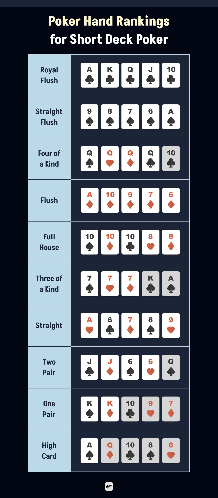

Looking for a faster, more thrilling way to play poker? Short Deck Poker delivers just that. This action-packed variant of Texas Hold’em ramps up the pace and boosts the odds of strong hands. In this guide, we’ll break down all the Short Deck Poker rules, explain how it differs from traditional poker, and share key strategies to help you play smarter and bolder. Let’s dive into the game that’s shaking up poker tables everywhere.
What is Short Deck Poker?
Short Deck Poker, also known as Six-Plus Hold’em, is a fast-paced variation of Texas Hold’em that adds more action and excitement to every hand. By trimming the deck down to just 36 cards, by removing 2s through 5s, you get more action, more strong hands, and way fewer dull moments.
With strong hands like suited connectors and big pairs showing up more often, every round feels dynamic and unpredictable. The game keeps the core rules of Hold’em, so it’s easy to learn, but the unique twists, like changed hand rankings and more frequent showdowns, make it a refreshing challenge for everyone at the table.
Whether you’re playing casually with friends or jumping into online matches, Short Deck Poker is perfect for social, fast-paced fun that keeps players laughing, guessing, and coming back for more.
Short Deck vs Texas Hold’em
| Feature | Texas Hold’em | Short Deck Poker |
|---|---|---|
| Deck Size | 52 cards (2–A) | 36 cards (6–A) |
| Hand Ranking | Full House > Flush | Flush > Full House; Three of a Kind > Straight. |
| Ace Usage | High or low | Still plays both roles, e.g., A‑6‑7‑8‑9 |
In Short Deck Poker, things get wild fast. That compact deck means strong hands have higher probabilities. You’ve got about a 14% chance of landing a straight by the river (way up from the usual 4–5% in traditional Hold’em), and you’re more than twice as likely to score pocket Aces.
Because the deck starts at 6, the number of possible straight combinations rises, which makes straights significantly easier to hit. To reflect this, the game often ranks three-of-a-kind above a straight, since this is now tougher to make. However, some variations of the game may still use standard hand rankings, so it’s always good to check the house rules.
On the flip side, flushes are harder to hit with fewer cards per suit, which makes them more valuable. That’s why a flush beats a full house in this version—because when something’s rare, it deserves the crown. And don’t forget the Ace's double life: it can be high or low, which opens the door to funky hands like A‑6‑7‑8‑9, a straight you’ll never see in regular Hold’em.
How to Play Short Deck Poker: Official Rules
Short Deck Poker might look familiar if you've played Texas Hold'em, but it moves at a snappier pace and throws in a few surprises. Let’s walk you through the entire game from start to finish.
Pre-Flop
Each round begins with the pre-flop, with players receiving their hole cards, the two face-down cards that belong only to them. Unlike full-deck Hold’em, where two players post blinds, Short Deck games typically involve antes from everyone, and a larger button ante from the dealer.
Once the cards are dealt, the first betting round begins. Players take turns deciding whether to call (match the biggest bet), raise (increase the stakes), or fold (give up the hand).
Flop
After the initial bets are placed, we move to the flop. This is when three community cards are dealt face-up in the center of the table. These cards are shared by all players and combined with your hole cards to make the best possible hand. Another round of betting begins, giving players the option to check (pass), place a bet, or call, raise, or fold in response to others’ actions.
Turn
Next comes the turn, also known as the fourth street. A fourth community card is revealed, and with more information on the table, the strategic tension builds. Another round of betting takes place, offering players a chance to push their advantage or bluff their way forward.
River
Then we hit the river, the fifth and final community card. This is the last piece of the puzzle, and the final chance to place bets. Everyone still in the hand now knows all five shared cards and can plan their best five-card combination using their two hole cards and any of the community cards.
Showdown
Finally, we reach the showdown. If two or more players are still in the game after the river, it’s time to reveal the cards. The player with the most powerful five-card hand takes the pot. In Short Deck, you can use any combination of your two hole cards and the five community cards to make your final hand.
Hand Rankings for Short Deck Poker
Here we present you the complete hand rankings from highest to lowest in Short Deck.
Royal Flush: The unbeatable hand: A‑K‑Q‑J‑10 of the same suit.
- Example: A♣ K♣ Q♣ J♣ 10♣
Straight Flush: Five consecutive cards of the same suit.
- Example: 9♠ 8♠ 7♠ 6♠ A♠ (Yes, A can be low in A‑6‑7‑8‑9!)
Four of a Kind: Four cards of the same rank.
- Example: Q♠ Q♦ Q♥ Q♣ 10♣
Flush: Five cards of the same suit, not always in sequence. Flushes are rarer in Short Deck due to fewer suited cards (only 9 per suit instead of 13), so it has a higher rank than Full House.
- Example: A♦ 10♦ 9♦ 7♦ 6♦
Full House: Three of a kind + a pair.
- Example: 10♠ 10♦ 10♣ 8♥ 8♦
Three of a Kind: Three cards of the same rank. When made with one hole card and two on the board, it’s called trips. If made with a pocket pair and one board card, it’s called a set.
- Example: 7♠ 7♥ 7♦ K♣ A♠
Straight: Five cards in numerical order, mixed suits. (Weaker than Trips)
- Example: A♥ 6♣ 7♦ 8♠ 9♥
Two Pair: Two different pairs.
- Example: J♣ J♦ 6♠ 6♥ Q♠
One Pair: A single pair of matching ranks.
- Example: K♠ K♦ 10♣ 9♥ 7♦
High Card: No combinations—just the highest card wins.
- Example: A♠ Q♦ 10♣ 8♠ 6♥

Basic Strategies for Playing Short Deck Poker
Short Deck Poker may feel familiar, but don’t let its resemblance to Texas Hold’em fool you, since this version has its own rhythm, risks, and rewards. Here we gather some great tactics that will help sharpen your edge and keep the fun rolling.
Choose Your Starting Hands Wisely
The tighter deck means stronger hands show up more often, and so do surprises. Pocket Aces appear more than twice as often, so when you get them, play them hard. Hands like A-K, A-Q, and A-J are solid, but even suited connectors like J♠10♠ gain huge value thanks to increased odds of hitting straights and flushes.
For example, an open-ended straight draw on the flop gives you about a 45.5% chance to complete it, much better than in regular Hold’em. Just don’t overvalue single-pair hands or medium pocket pairs like Q-Q, as they’re easier to crack in this format.
Loosen Up and Play Aggressively
Short Deck thrives on action. With stronger hands appearing more frequently and antes driving up pot sizes early, you’ll need to expand your range and play more aggressively. Calling pre-flop is more common here, and even marginal hands can hold their own. Be ready to commit when the time is right, especially with draws and combo hands.
Use the “Rule of 3 and 6”
Need a quick way to figure out your chances of hitting that perfect card? Use this simple trick: multiply your outs by 6 if you have two cards to come, and by 3 if there’s just one. So if you’re chasing a flush with 5 outs, you’ve got roughly 15% equity with one card left—close enough to guide smart bets without needing a calculator.
Think Bigger After the Flop
Don’t fall in love with just a top pair because they rarely hold up in Short Deck. With straights and trips flying around, you’ll want to chase stronger combinations. Stay alert to the board texture and how your opponents are betting. It’s often the key to spotting disguised monsters.
Download Pokerrrr 2 Now—the Best Short Deck Poker App to Play with Your Friends
The best Short Deck players adapt, experiment, and keep learning. Know your odds, review your hands, and don’t get discouraged by swings, as they’re part of the ride. And of course, always play within your limits to keep things fun and stress-free.
Ready to put those skills to the test and play with friends anytime, anywhere? With Pokerrrr 2, you can host private games, create your own Poker Club, and enjoy smooth, real-time action in Short Deck Poker, Texas Hold’em, Omaha, Blackjack, and more. Track hand histories, chat in-game, and bring the excitement of poker night to your screen, no matter where you are.
Download Pokerrrr 2 now and turn every moment into a fun and competitive poker session with your crew.